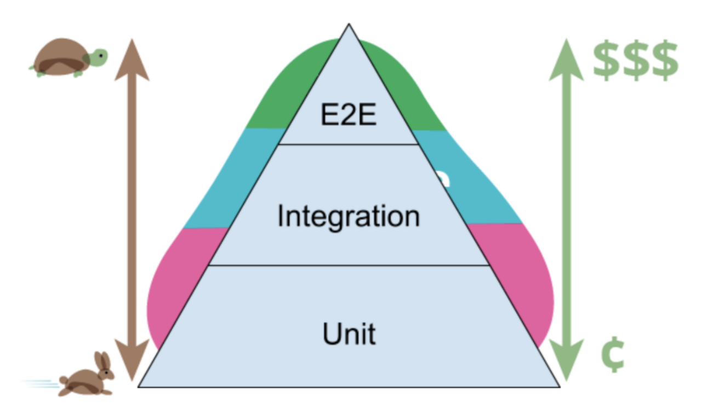
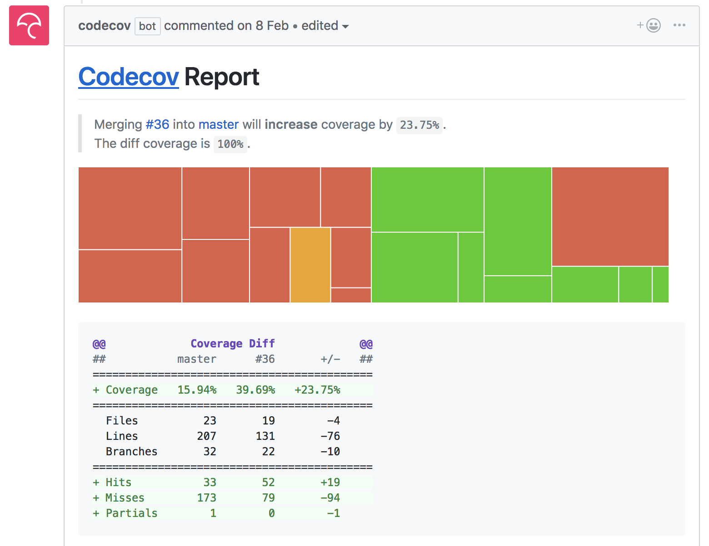
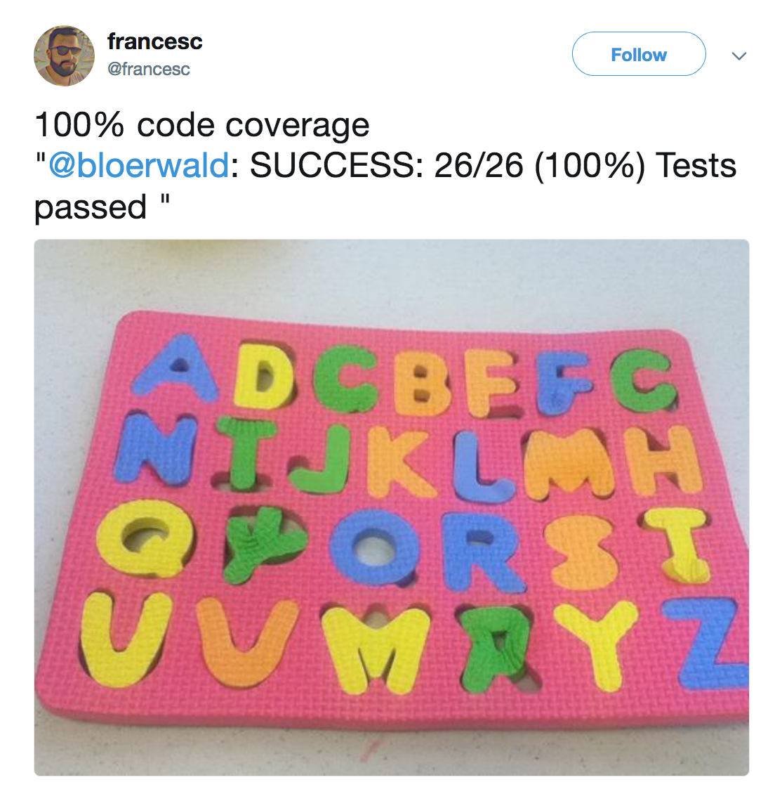

Effective Frontend testing
Maxence Poutord - @_maxpou
Slides, links, etc.
maxpou.fr/talks/
Why not to test?
- ⏳ "We don't have time to test!"
- 🐌 "Test slow me down!" (creation + maintenance)
- 🤷♂️ "We don't know how to test and what to test!"
💪 Why we need test
- 🤗 Confidence
- 📖 Document codebase
- 👊 Helps to write better code
- 💸 Reduce maintenance cost
- 🍻 Deploy to prod on Friday? Why not!
The importance of automation
Testing pyramid
Testing Trophy

© Kent C. Dodds
Hey, what about static testing?
Yes I know it can be annoying... but it catches:
- 👍 dumb errors
(== instead of ===, unused variables...) - 👍 avoid steril debates
(tab vs space, semicolons or not...)
➡ Helps to focus on what really matter ❤️
Unit tests
Example
const vatCalculator = require('./vatCalculator')
it('return the expected VAT', () => {
const basket = [
{ item: '🍺', price: 3 },
{ item: '🍔', price: 5.5 }
]
expect(vatCalculator(basket)).toBe(1.3)
});
Jest
Because using 3 packages for testing is confusingHow to test component?
Treat your component as a black box:
- props
- events (click, select...)
- lifecycle events (mounted, destroyed...)
- event emitted
- output (DOM)
- props pass to subcomponents
- Internal state (data, computed properties)
👉 if public API doesn't change, we should refactor component without changing tests!
Definition of a good test
- 🐟 Dead simple
- 🛌 Cover the most common usages
- ⚡️ Lightning fast (nobody like to wait!)
- 🤯 Doesn't test external library
Code coverage (cc)

👌 Following cc evolution
💩 Code coverage bullshit
High coverage !== code quality
💩 Code coverage bullshit
function add (a, b) {
launchNuclearMissile()
return a + b
}
// ...
test('add.js', () => {
assert(add(1, 2)).toBe(3)
});
💩 Code coverage bullshit
function foo(a, unitTest = false) {
// code
if (weirdAndHardToConditionToTest || unitTest) {
// code
}
return bar;
}
📸 Snapshot testing
Example
const vatCalculator = require('./vatCalculator')
it('return the expected VAT', () => {
const basket = [
{ item: '🍺', price: 3 },
{ item: '🍔', price: 5.5 }
]
console.log(vatCalculator(basket))
});
Example
const vatCalculator = require('./vatCalculator')
it('return the expected VAT', () => {
const basket = [
{ item: '🍺', price: 3 },
{ item: '🍔', price: 5.5 }
]
expect(vatCalculator(basket)).toBe(3.55)
});
Example
const vatCalculator = require('./vatCalculator')
it('return the expected VAT', () => {
const basket = [
{ item: '🍺', price: 3 },
{ item: '🍔', price: 5.5 }
]
expect(vatCalculator(basket)).toMatchSnapshot()
});
// Jest Snapshot v1, https://goo.gl/fbAQLP
exports[`return the expected VAT 1`] = `3.5`;
👍 Good usecase
it('should render correctly', () => {
const wrapper = shallowMount(Alert, {
propsData: {
message: 'Test message',
},
});
expect(wrapper.html()).toMatchSnapshot();
});
exports[`Alert.vue should render correctly 1`] = `
"
Test message
"
`;
Misconceptions
- 👀 Snapshot testing is NOT visual regression testing
- 💁🏻♀️ Not only for DOM testing!!!
- 🙅♂️ Purpose is not to replace existing assertions.
➡ lazy way to provide test where there's not! - 🐑 Don’t fall into the temptation of quickly update snapshot without checking the real change!
🤔 Huge Snapshot?
- 🎍 Tests are about confidence
- 🙅♀️ Nobody like to review huge snapshots
- 👍 Use something else! (or
shallowMount)
Integration test
- dumb components ==> unit tests
- containers (router, store) ===> integration tests
Benefits

Example in VueJS
import { mount, createLocalVue } from '@vue/test-utils'
import VueRouter from 'vue-router'
const localVue = createLocalVue()
localVue.use(VueRouter)
localVue.use(Vuex)
const router = new VueRouter()
const store = new Vuex.Store({
state: {},
})
mount(Component, {
localVue,
router,
store,
})
About: Async tests
test('should render an page with data', async () => {
expect.assertions(1)
const wrapper = mount(StudentList, {
localVue,
router,
store,
sync: false,
})
await flushPromises()
expect(wrapper.html()).toMatchSnapshot()
// extra security (avoid empty table in snapshot)
expect(wrapper.text()).toContain('Ralph Wiggum')
})
About mock
- 👎 Mocks sucks
- 🤝 Ok for:
- External calls (HTTP GET/POST/...)
- Browsers API (local/session storage, navigator...)
Don't forget the most important
we write tests to catch bugs 🐛
If your test is red,
don't delete it, fix it!
// it('should...', () => {
// expect(actions.resetStore).toHaveBeenCalled();
// expect(actions.getXXX).toHaveBeenCalled();
// expect(actions.getYYY).toHaveBeenCalled();
// });